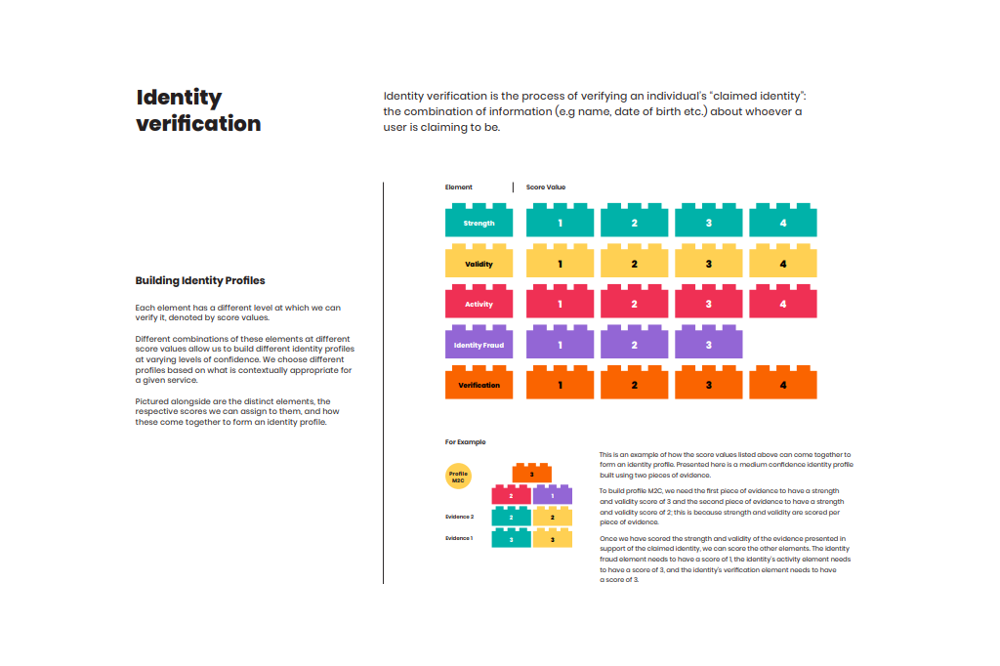
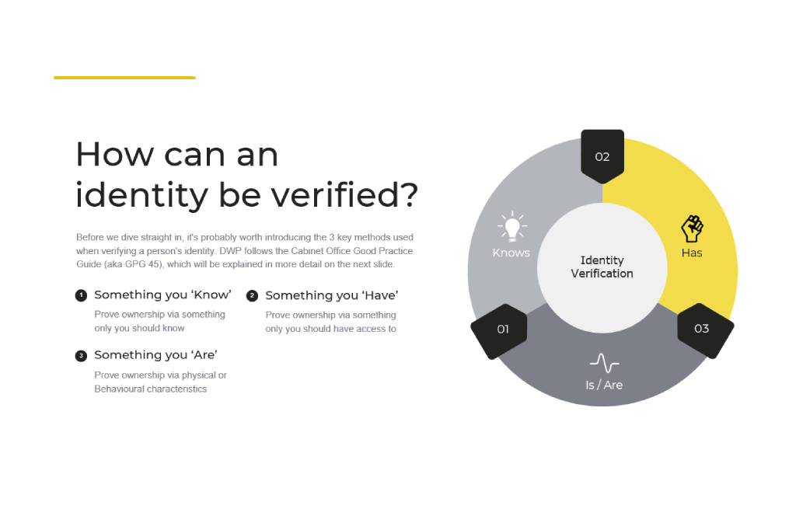
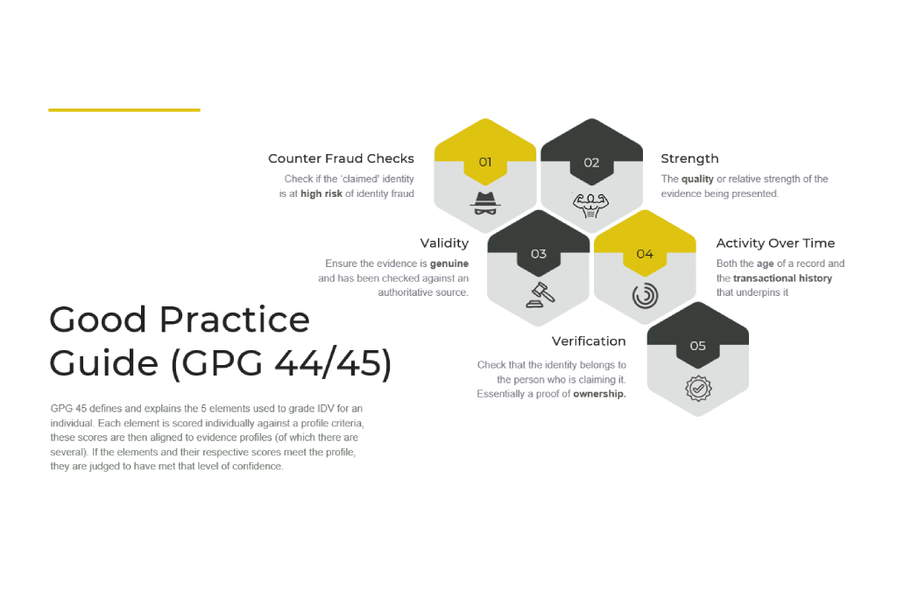

Re-imagining the GDS ‘Good Practice Guides’
Creating flexible frameworks whilst exploring the elasticity of identity verification
In 2012 Government Digital Service (GDS) published its series of Good Practice Guides (GPGs). I think it's fair to say these are not considered the most accessible of reads... and to use their own language, they are recgnised for being "necessarily quite technical".
In my role as a Product Manager and Identity & Trust Specialist, these became critical documents for me to understand, reference and articulate to others. However, with some weighing in at just under 10k words, including a 29 page sub-section, which presented 32 identity profiles as tabular data, this was often easier said than done.
Reframing the problem
I had already seen a couple of attempts to re-frame this information. For example, the digital consultancy Hippo who opted for a Lego bricks analogy.
But this interpretation always seemed far too rigid to me, especially when dealing with a concept as fluid as identity. Whilst I could appreciate the bricks were meant to be interchangeable. I couldn’t shake the feeling that this should be more about depth and breadth rather than height.

This is a test paragraph sitting below the image. It should have the same vertical breathing room above it as any other paragraph on the page — neither flush to the caption nor excessively distant from it.
What did I do about?
I focussed on creating a framework that could literally ‘flex’. After all, an identity can be challenged in a variety of ways, for a variety of reasons and across a variety of different channels.
My focus was less about 'how' to achieve a certain score and more about 'why' that score was best suited to certain scenarios and factors.
I also wanted to pay particular attention to language, since my early research had shown this was the number one reason for stakeholder assumptions. The difference between verification, validation and authentication, for example, was a recurring and lengthy bone of contention.
To address these unnecessary distractions, I created a couple of one pagers, which sought to cut through a lot of the noise, acting as anchors for discussions and stakeholder alignment.


Design decisions
Decision one
Describe the first significant design decision. What was the problem, what options existed, what did you choose, and what was the rationale?
Decision two
Describe the second design decision. Keep the same structure: problem → options → choice → rationale. Be specific about trade-offs made.
Decision three
Describe the third design decision. If this involved a visual or interaction approach, explain the thinking behind it and how it served the user or the system.
Decision four
Use this for a decision that was primarily visual, conceptual, or systemic — for example, an illustration system, a taxonomy, a naming convention. Explain the intent and the outcome.
Impact
- Outcome one — describe a concrete, specific result. Avoid vague claims; prefer measurable or observable effects.
- Outcome two — describe adoption, usage, or stakeholder reception where relevant.
- Outcome three — describe a downstream effect: what did this work make possible?
- Outcome four — describe influence on other teams, products, or initiatives.
- Outcome five — describe longer-term strategic significance or future potential.